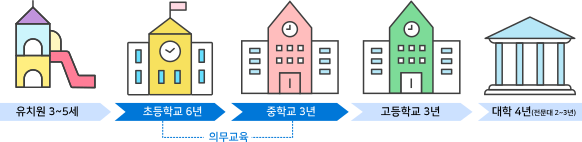

-
 1회기
1회기
나와 자녀의
관계 이해하기 -
 2회기
2회기
나와 자녀의
관계 증진하기(1) -
 3회기
3회기
나와 자녀의
관계 증진하기(2) -
 4회기
4회기
부모로서의
자신 모습찾기
- 시작하기
- 첫째,
우리 아이
잘 교육하기 - 둘째,
한국의 교육제도
이해하기 - 셋째,
자녀의
학교생활 돕기 - 넷째,
학습 및 언어지원
도움정보 - 정리하기
한국의 교육제도 이해하기
한국 교육제도의 전반적 이해

한국의 교육과정은 초등학교 6년, 중학교 3년, 고등학교 3년, 대학교 4년(전문대학은 2년)으로 구성되며, 초등학교, 중학교는 의무교육기간으로 학비가 무료입니다.
교육과정
유치원부터 대학까지 1년 단위로 두 개의 학기가 운영되며 1학기가 끝나면 한달 정도의 여름방학이 있고, 2학기가 끝나면 새 학년이 시작될 때까지 한 달 정도의 겨울방학과 1~2주간의 학년말 방학이 있습니다.